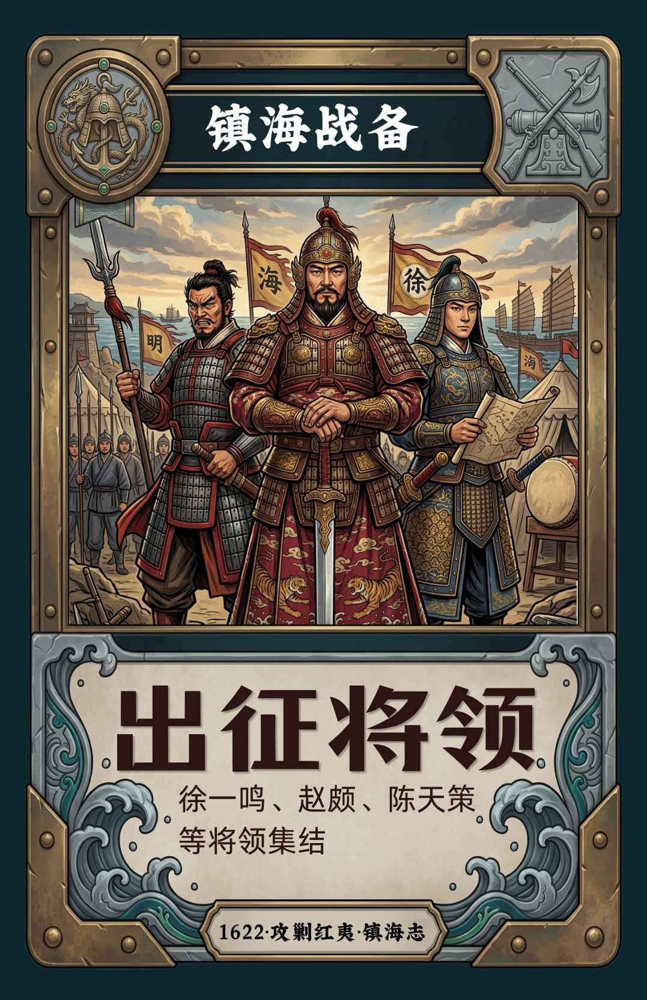
出征将领
统帅与军队集结。
玩家不是旁观历史，而是进入海防部署本身：巡防、探海、争夺资源、打乱对手，在有限回合里完成一套完整的镇海战备。
公元1622年，福建沿海面对来自海上的压力。厦门一带成为海防前线，军队集结、炮台整备、水师待命，海防路线与军令调度都可能改变局势。
玩家将在鸿山石壁、浯屿水寨、圭屿海口与澎湖风柜尾之间移动，取得四项关键镇海战备：出征将领、红夷大炮、水师战船、防海方略。
但对手也在同一张海图上行动。一次封港、一场东风火攻、一次调营换防，都可能让原本领先的人瞬间失去优势。
包装、卡牌、技能影片与 H5 游戏使用同一套视觉语言。现场展示时，可以先看产品，再看玩法，最后直接从 iPad 进入游戏。
国潮历史纸牌策略桌游，以明代海防、厦门海疆、军令与战备为主要视觉与玩法线索。
实体版强调桌面对局、卡牌收藏与资源交换；H5版保留相同核心逻辑，并加入技能影片与回合演出。
今天在 iPad 上展示时，可以从这一页直接进入完整数字版。
进入数字版游戏三名玩家轮流行动。谁先集齐四种不同的镇海战备，谁就立即完成胜利条件。
使用【巡防】向当前地点相邻的地牌移动1步，抢先前往需要的海防地点。
抵达地点后使用【探海】，取得该地点对应的镇海战备。
【封港戒严】【东风火攻】【调营换防】可限制对手、烧牌或交换位置。
【徐都督令】【赵游击令】可强制交换双方1项镇海战备，直接改变胜负。

统帅与军队集结。
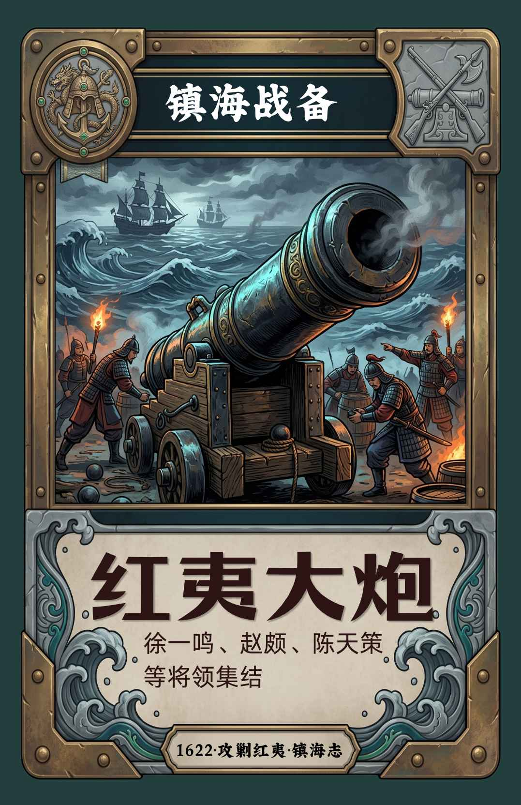
重炮与海防火力。
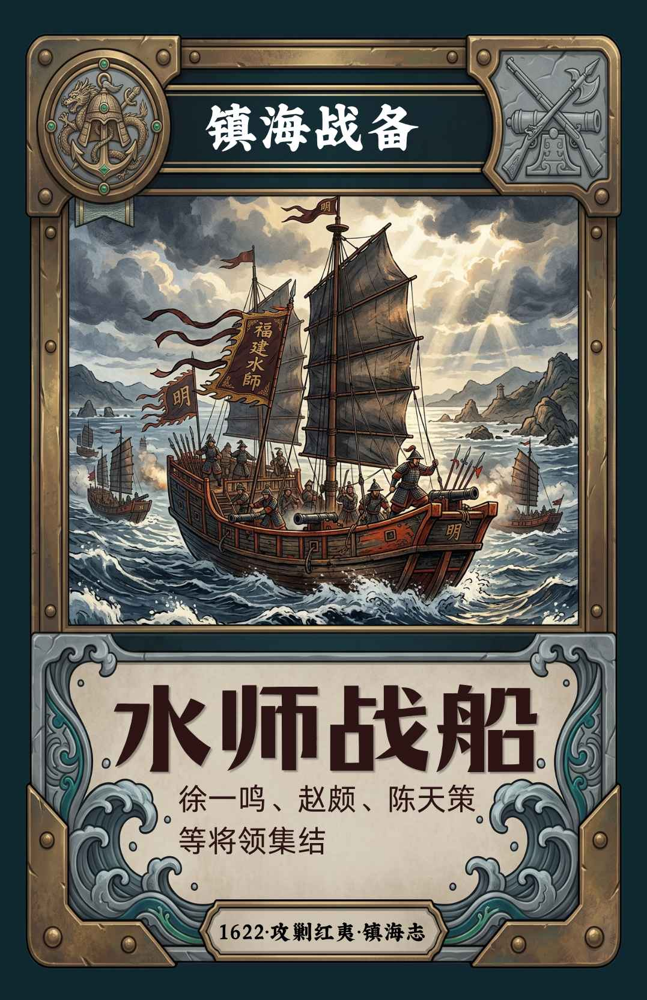
水师与海上机动力。
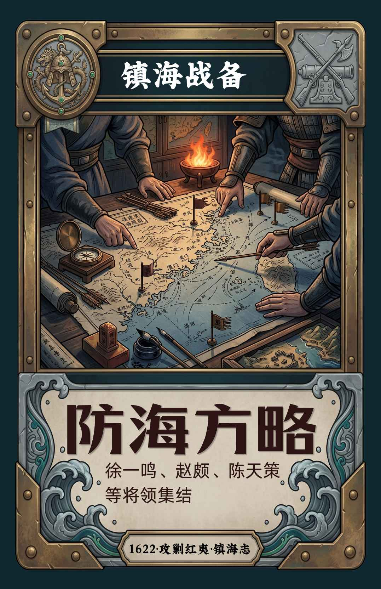
海图、布防与战略。
iPad 上可以横向滑动浏览完整牌面。
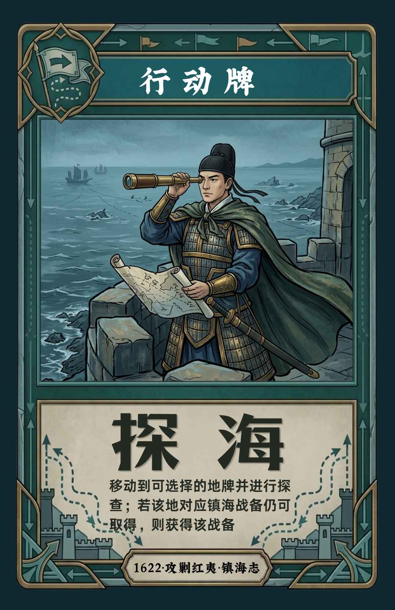
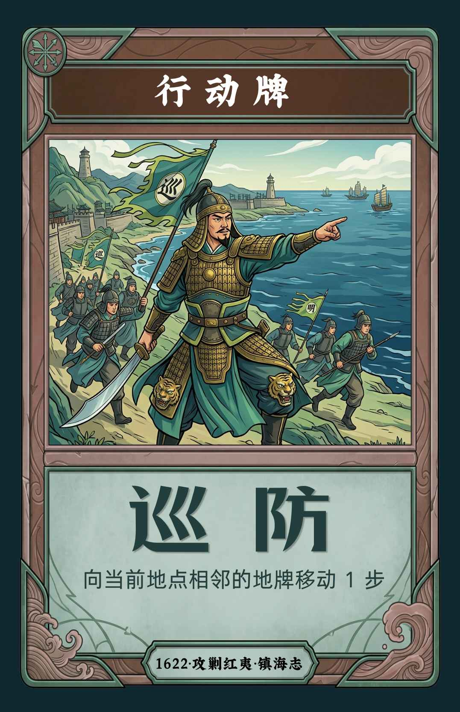
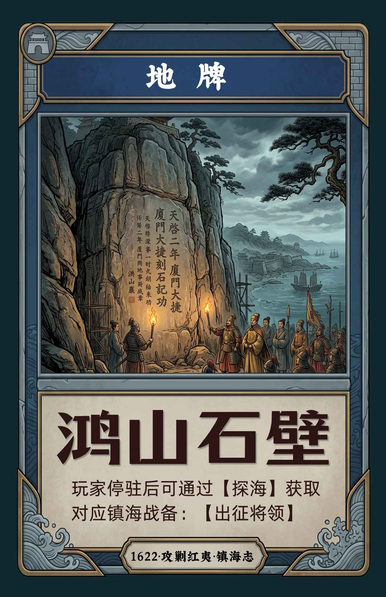
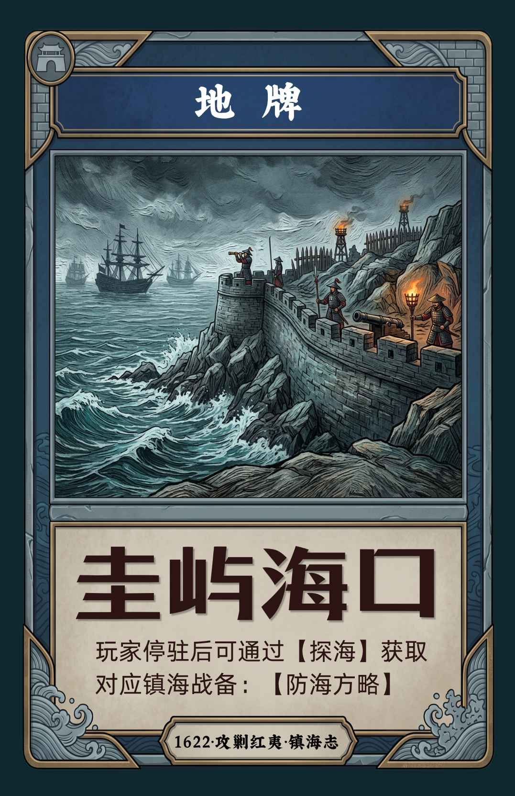
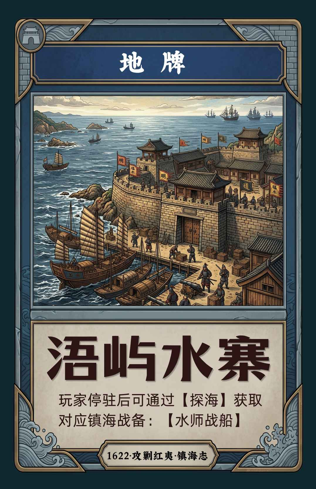
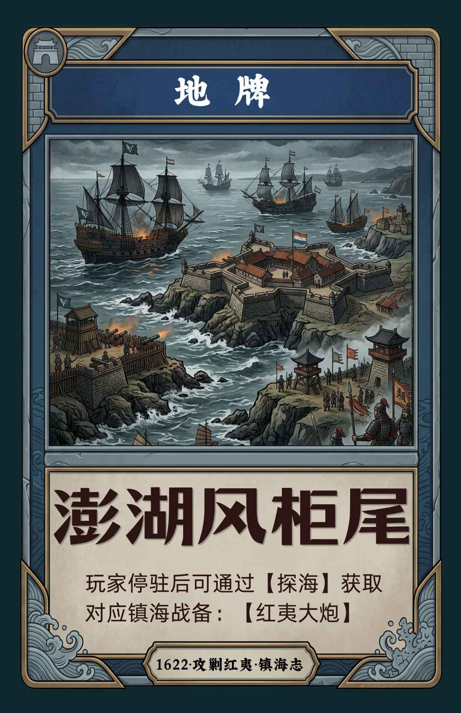
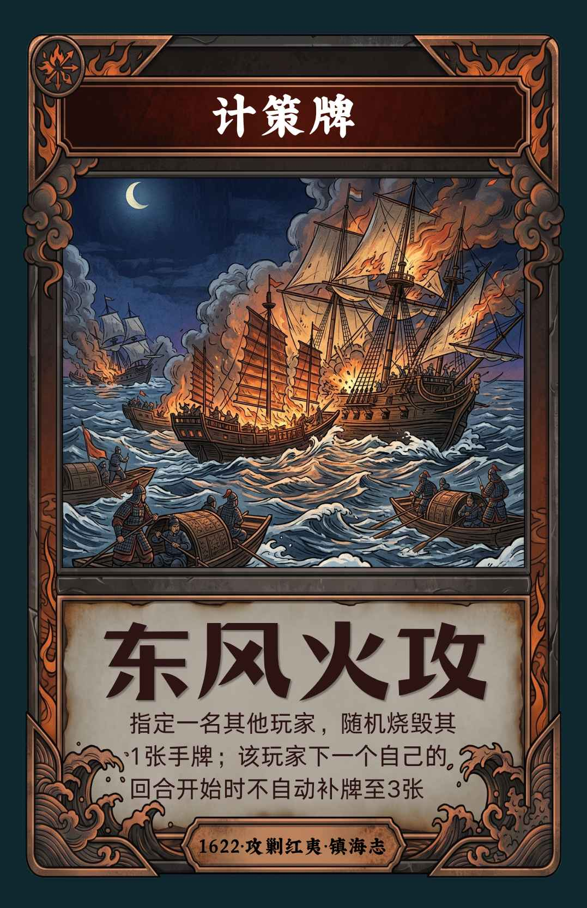
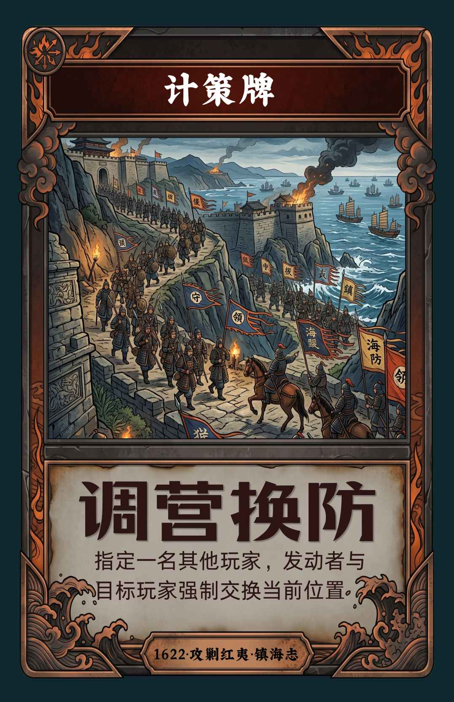
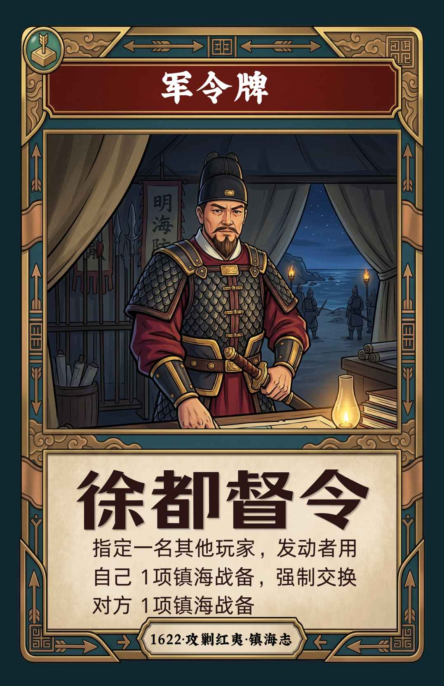
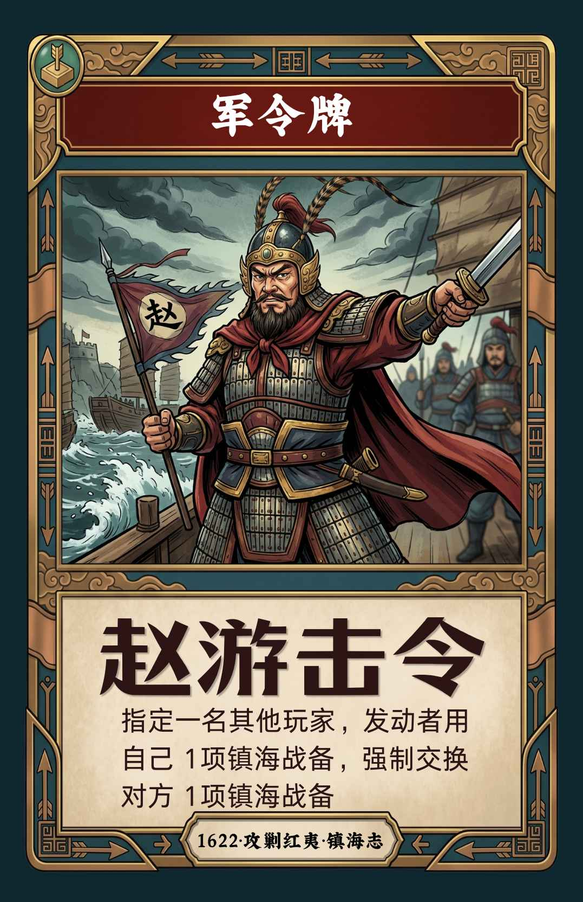
数字版在特殊牌发动时播放对应短片，让桌游逻辑拥有更强的现场感。
玩法仍沿用原有十字结构：中央为起点，四张地牌位于上下左右。地图视觉可以换成更接近厦门岛轮廓的海防图，但规则不改变。